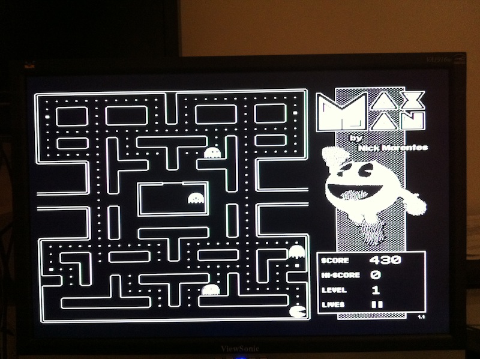

Цветной микрокомпьютер Maximite
На сегодняшний момент проект Maximite является моим любимым в области рукодельных микрокомпьютеров. Собрав его оригинальный черно-белый вариант, я после запустил на нем RetroBSD, затем даже свой эмулятор Радио-86РК. Что подкупает в проекте, так это законченность. Конструктивно Maximite простой, PIC32 делает почти всю работу. Но Maximite - это не просто идея в виде схемы. Для Maximite разработана плата, корпус и, собственно, прошивка - MMBasic, продвинутый диалект Бейсика, дающий доступ ко всей периферии, а она у Maximite внушительна. В небольшом интервью автор и разработчик Maximite, Джеф Грэхем, рассказал, почему ему фактически пришлось довести проект для столь законченного вида.
Недавно автор выпустил новую, цветную версию, и данный обзор посвящен именно ей. Итак, возможности цветного Maximite (новые и улучшенные возможности отмечены звездочкой):
- PS/2 клавиатура
- VGA видео-сигнал (480x432 или 240x216), восемь цветов (*)
- черно-белый композитный видео-сигнал
- генерация стерео-звука (*)
- часы реального времени с независимой батарейкой (*)
- 20 независимых пинов ввода-вывода
- разъем для подключения к Arduino (*)
- SD-карта (до 32ГБ)
- USB соединение для передачи файлов или терминала
- интерфейсы RS232, I2C, SPI, 1-wire
- двухканальный ШИМ (*)
- возможность обновления прошивки по USB
- возможность питания от USB
- встроенная в Бейсик система шрифтов
- команды работы со спрайтами в Бейсике для программирования игр (*)
Встроенный Бейсик позволяет максимально полно использовать все эти возможности. Можно даже создавать обработчики прерываний таймера в виде подпрограмм.
Я, конечно, приобрел конструктор цветного Maximite, как и в прошлый раз у Altronics.


Все элементы с ножками, чтобы, видимо, дилетантам в пайке, типа меня, было проще. Только один конденсатор (C10) там планарный и довольно маленький. Хоть под него пятачки были уже с оловом, пришлось поерзать с пайкой, чтобы не закоротить.

В сборе.


Для сравнения старый и новый Maximite.


Вот, что можно делать с цветами на Бейсике.

А это хоть и не в цвете, что, все-таки, классика.

Как пишет автор, возможность генерировать цветной видео сигнал потребовала 100-ногую модель PIC32, где есть три канала SPI. Понятно, что при этом требуется “прогонять” в три раза больше данных, а так так частота кристалла осталась той же, 80МГц, то объективно, цветная прошивка работает немного медленнее, чем оригинальная черно-белая. Поэтому для нового Maximite есть вариант чисто черно-белой прошивки, в которой аналогично добавлены все новые периферийные возможности, и которая работает по скорости аналогично предыдущему, черно-белому Maximite’у.
Конструктор от Альтроникс, как и в прошлый раз, отличного качества.
В целом, рекомендую.
Disclaimer